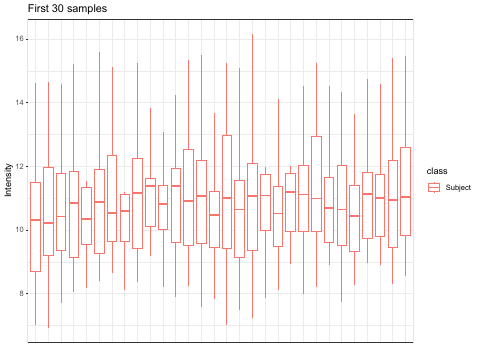
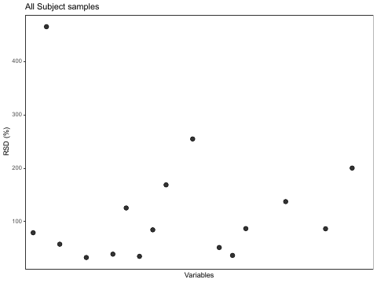

Slot 91 · qc-drift · Metabolomics: QC and Drift · layout mock
Picked on the arc mock (2026-10-05): two pages, Drift · Correction, under a control named Step (the rule from 90);
Run order Random · Grouped; Correction None · Median · QC-LOESS; Span 0.3 · 0.75; QC every
5 · 10; a drift-left readout beside the QC RSD; simulated, because MTBLS6038 has no QCs. The misconception: per-sample
normalization corrects instrument drift — each metabolite drifts its own way along the injection order, only a curve through
pooled QCs follows it, and a run made in group order turns drift into a difference. This mock draws each page at the widget's 550px.
Every number is computed on this page by _lab/proteomics-arc-model.js part D. Blue-ruled boxes in §8 are your calls.
02-1 cell 1 · the instrument's output

02-3 cell 9 · massqc_report: per-sample boxplots

02-3 cell 9 · massqc_report: RSD per metabolite

1 · Measured before the mock, at 02-4's design: 52 hyperplasia vs 52 cancer
26 metabolites with the lesson's names; 4 truly different by ±0.6 log2 (two up, two down); every metabolite drifts by a shared fall plus a slope and a bend of its own; a pooled QC first, after every 5th study sample, and last. 100 seeds, Welch t on log2, BH < 0.05. Drift left is what the correction leaves in the study samples, against their drift-free values.
| QC every 5 (22 QCs in 126 injections) | random: false / 22 | grouped: false / 22 | grouped: true / 4 | QC RSD | drift left, log2 |
|---|---|---|---|---|---|
| None | 0.34 | 16.61 | 3.43 | 17.6% | 0.245 |
| Median normalization (02-3 cell 11) | 1.39 | 15.98 | 3.46 | 15.8% | 0.284 |
| QC-LOESS, span 0.3 | 0.22 | 0.46 | 4.00 | 4.5% | 0.036 |
| QC-LOESS, span 0.75 | 0.24 | 2.99 | 4.00 | 7.3% | 0.079 |
| the drift removed exactly (the floor) | 0.23 | 0.21 | 4.00 | 5.4% | 0 |
The arc's findings hold at 52 + 52. In a random order drift costs little (0.34 false calls); in group order it is 16.6 of 22, and the median leaves 16.0 because it removes only what every metabolite shares. One new point for the readout: at span 0.3 the QC RSD (4.5%) reads below the drift-free floor (5.4%) — a tight curve absorbs the QCs' own noise — so the QC RSD flatters a tight span and only the drift left in the study samples says how much was removed. With a QC every 10th injection: span 0.3 0.98 false calls, 0.75 5.26.
For your notebook (not the widget). MTBLS6038 records no run order: 02-2 cell 5 builds injection.order from
the sample file's row order, and the file lists the samples in 12 blocks by cohort (24 cancer, 29 hyperplasia, 1 cancer, 12 healthy,
10 prostatitis, …). If that were the run order, the comparison in 02-4 would be the grouped case above. And 02-3's
massqc_report RSD is computed over the subject samples, since there are no QCs, so it measures biology plus drift, not
the instrument.
2 · The Drift page — what drifts, and what a per-sample median can remove
Run order Grouped, no correction, the default seed below. The example metabolite is the null one with the most drift.
B recommended. Its lower panel is the misconception drawn: every metabolite's QCs drift their own way, and the bold line is the per-injection median, the one curve median normalization removes — the spread around it is what remains. A carries your 02-3 boxplots, which show the medians but not that metabolites differ; C's RSD bars are a number, not a picture of why.
3 · The Correction page — the curve through the QCs, and what each correction does to the test
The same run, the example metabolite, Correction QC-LOESS at span 0.3.
B recommended. The upper panel is the correction for one metabolite; the lower is all 26 at once, one row per correction, so None and Median can be seen calling the drifted nulls different while QC-LOESS returns them to 0 — as 89's foot set every method side by side. C puts the 100-seed summary in the widget, which is the arc's evidence rather than the reader's run.
4 · The rail, as recommended
Readout: the example metabolite's cancer − hyperplasia difference and adjusted p; its QC RSD; the drift left; and the count of metabolites called different (with True values On, true and false positives).
8 · Your calls
8.1 · The Drift page A · one metabolite, and 02-3's per-sample boxplots | B · one metabolite, and every metabolite's QCs with their per-injection median (recommended) | C · one metabolite, and the QC RSD of each
8.2 · The Correction page A · one metabolite before and after | B · one metabolite corrected, and all 26 differences under each correction (recommended) | C · one metabolite corrected, and false calls over 100 seeds
8.3 · The groups A · 02-4's comparison: Prostatic hyperplasia vs Prostate cancer, 52 + 52 (recommended) | B · A and B, 40 + 40 as the arc mock
8.4 · Default run order A · Random (recommended): the drift is visible and the test is fine; Grouped is one click, and the reader makes the damage | B · Grouped: the damage on arrival
8.5 · The presses A · Inject (the run, one injection a beat, as 89's Measure) and Correct (the curve drawn through the QCs, then every value moves to its corrected place) (recommended) | B · no presses: both pages drawn at once
8.6 · The example metabolite A · the null metabolite with the most drift by default; a Metabolite dropdown of all 26, and a click on its trace (recommended) | B · a dropdown only
8.7 · Colours A · as drawn (recommended): hyperplasia --c-group-a, cancer
--c-group-b, a pooled QC a square in --c-reference (the fixed benchmark every sample is judged against), the LOESS
curve --c-smoothed, the true drift dashed --c-theory, the per-injection median --c-highlight, called
different --c-extreme | B · say which to change
Left to the draft, conventional: the engine draws every metabolite's drift before the run order, so switching Random and Grouped reorders the same samples instead of drawing a new run (the arc model shuffles first); a typical default seed measured over seeds.